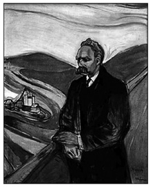
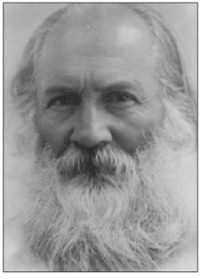
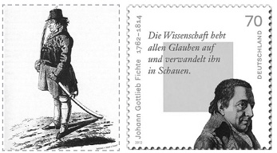
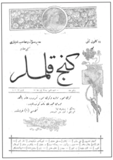
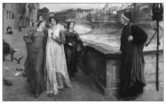
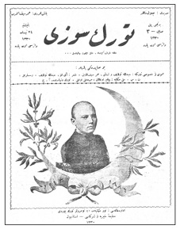
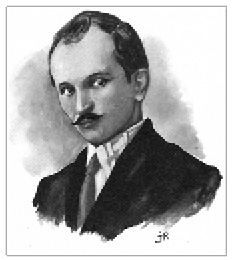
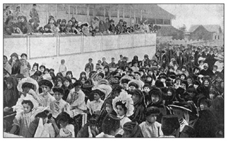
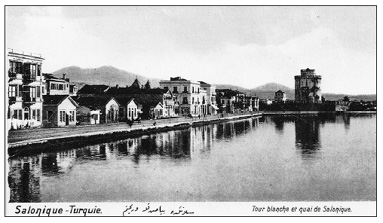

Osmanlı Devleti, daha 15. yüzyılda, Rumeli fütuhatı ertesi bir Balkan ülkesi görünümü kazanmıştı. 19. yüzyılda Balkanlar’da gerçekleşen toprak kayıplarına değin Osmanlı ekonomik gücünü ve beşeri sermayesini büyük ölçüde Balkanlar’dan elde etmişti. Osmanlı Devleti’nin coğrafyası Marmara denizi ve Boğazlarla ayrılan iki ana bölgeyi içeriyordu. Bunlar eski terimle Avrupa-i Osmanî ve Asya-i Osmanî idi. Mısır ve Mağrip dışarıda bırakılırsa Osmanlı Asya’sı beş bölümden oluşuyordu. Bunlar, Osmanlı coğrafyacılarına göre Anadolu şube-i ceziresi; Erzurum yaylası ve Cezire-i Ulya; Irak ve Bâdiyet-üş-Şâm; Suriye ve Filistin ve son olarak Arabistan’dı. Bâdiyet-üş-Şâm, Fırat ve Dicle’nin birleşip denize döküldüğü noktadan itibaren batıya doğru uzanan çölün adıydı. Bu çölün güney sınırları Arap yarımadasının içerisine doğru kavisli olarak uzanıyordu.
Suriye ve Filistin’in bir ölçüde kendine yeterli olduğu düşünülürse, Anadolu Şube-i Ceziresi yani bugünkü Orta ve Batı Anadolu ve Balkanlar tarih boyunca Osmanlı Devleti’nin yükünü omuzlamış bölgelerdi. Osmanlı bütçelerinde bu bariz bir biçimde görülüyordu. Örnek vermek gerekirse Selanik’in 1909 yılı bütçesinde geliri 2.275.400 altın, gideri 1.254.000 altındı. Keza, Aydın vilayetinin geliri 3.523.500 altın, gideri 826.100 altındı. Ancak 19. yüzyılın ikinci yarısından itibaren Batılı ülkelerin baskısı ve bu topraklarda asayişin sağlanması gereği gündeme gelen reform girişimleri sonucu Rumeli’nin gider hanesi kabarmaya başladı. 93 Harbi diye bilinen 1876 Osmanlı-Rus Savaşı’ndan başlayarak Balkan Harbi ile noktalanan süreç Osmanlı’nın Batı cenahını tümden çökertti. Bundan böyle Osmanlı Balkan ülkesi, dolayısıyla Avrupa ülkesi olmaktan çıkıp bir Asya ülkesi, Ortadoğu ülkesi kisvesine büründü. Balkanlar’ın servetinden yoksun kalmanın yanı sıra bu toprakların beşeri sermayesini yitirmesi Osmanlı için büyük bir kayıp olmuştu. Osmanlı’nın genel okuryazarlık düzeyini yukarı çeken coğrafya her zaman Balkanlar’dı. Dünün Yeniçeri Ocağı büyük ölçüde Balkanlar’dan devşirilmişti. Birçok Osmanlı aydını Balkan kökenliydi. İttihat ve Terakki hareketi Balkanlar’da filizlenmiş, güçlenmişti. Değişik etnik unsurların bileşimi olarak nitelenen Osmanlı kimliği, Araplar bir yana, büyük ölçüde Balkanlar’daki çeşniydi. İmparatorluklara özgü hoşgörü Balkanlar’da uzun yüzyıllar barışı da getirmiş, bu denli renkli bir coğrafya imparatorluk çatısı altında görece bir arada yaşamayı başarmıştı.
Balkan Harbi, aslında Avrupa-i Osmanî’nin çözülüşünün son noktasıydı. Bu savaşın kaynağı Ayastefanos Antlaşması’na kadar geri gidiyordu. Bu antlaşma ile Balkanlar’da on yıllarca sürecek bir kargaşanın tohumları atıldı. Ayastefanos Antlaşması ile Bulgaristan’ın sınırları içine Makedonya da katıldı; Sırbistan bağımsızlığını kazandı. İşte bu yeni konuşlanma Balkan Harbi’ne giden yolu döşedi. Sırbistan ilk günden itibaren topraklarını genişletme sevdasına kapılmış, Berlin Antlaşması Bulgaristan için düş kırıklığına dönüşmüş, Yunanistan sürekli kuzeye doğru yayılma özlemiyle yanıp tutuşmuştu. Tüm bu emeller Osmanlı Avrupası’nın topraklarını ele geçirme siyaseti üzerine kurulmuştu.
Bu yerel etmenlere büyük devletlerin politikalarının da dahli durumun vahimleşmesine neden oldu. İttifak ve İtilaf devletleri zamanla Balkanlar’ı satranç tahtasına çevirdiler. Rusya’nın Balkan Slavlarına verdiği destek yayılımcılığı etkileyen önemli bir etmen oldu. İttifak devletleri de bu arada boş durmadılar. 20. yüzyılda Balkanlar’da dönüm noktası Avusturya-Macaristan’ın Balkanlar’a göz dikmesi ve fırsat kollayarak 1908 Devrimi’nin kargaşa ortamında Bosna-Hersek’i ilhakıydı. Rusya bu ilhak karşısında Slavları birleştirerek Avusturya-Macaristan’ın yayılımcılığına direnmeye, bu arada geride kalan Osmanlı topraklarını paylaştırmaya girişmişti. Başka bir deyişle bir Balkan toprağı olan Bosna-Hersek’in Avusturya-Macaristan tarafından ilhak edilmesi Cermenizm ile Slavizm arasındaki çatışmanın doruk noktasını oluşturdu. Çözümsüzlüklerin bir diğerini izlediği bu sürece Balkan Harbi ile son nokta konulmak istendi. Ancak bu girişim dünyayı yeni bir felakete sürükledi. Milyonlarca insanın telef olduğu Cihan Harbi ile dünya 20. yüzyılı karşıladı.

Ziya Gökalp’e göre Alman filozofu Friedrich Wilhelm Nietzsche’nin hayal ettiği
üstün insanlar Türklerdi. Türkler her asrın “yeni insanlar”ıydı. Bu nedenledir ki,
“yeni hayat” bütün gençliklerin anası olan Türklerden doğacaktı.
19. yüzyılın tüm umutlarını çökerten, La Belle Époque diye bilinen mutluluk evresini sonlandıran Cihan Harbi, Balkanlar’daki gelişmelerin fitillediği bir savaştı. 20. yüzyıl tarihine büyük ölçüde damgasını vuran Balkanlar oldu. 19. yüzyılı sona erdiren ve 20. yüzyılı başlatan Cihan Harbi Balkanlar’daki gelişmelerin sonucuydu. Bir başka deyişle “uzun 19. yüzyıl”ı sonlandıran ve “kısa 20. yüzyıl”ı başlatan Balkanlar’dı. Zira 19. yüzyılın tüm umutlarını çökerten Cihan Harbi, Balkanlar’daki gelişmelerin yol açtığı bir savaştı. 20. yüzyıl her ne kadar 1914’e tarihlenirse de 1914’e giden yol 1912’de çizilmişti. Balkan Harbi Cihan Harbi’nin “prelüd”ü sayılırdı. Balkan Harbi dünya tarihi için olduğu kadar Türkiye tarihi açısından da bir dönüm noktası, bir milattı. 1912-1922 arası on yıl bugünkü Türkiye topraklarında ulus-devlet inşasının ne denli engebeli bir yol olduğunu gösteriyordu.
Osmanlı için Balkan Harbi sonun başlangıcıydı. 1914-1918 arası kapışan ülkeler arasında en uzun Cihan Harbi, Osmanlı Devleti’nin ve onu izleyen Türkiye’nin savaşıydı. Savaşan taraflar ilk top sesleri duyulduğunda savaşın 1914 Noel’inde sona ereceği beklentisi içindeydiler. Ancak beklentiler boşa çıkmıştı. Savaş dört yıl sürmüş, kısa sürede geniş bir alana yayılmıştı. Daha 1914 yılı bitmeden Osmanlı ülkesinde savaş Harb-i Umumî, yani genel savaş olarak nitelenmişti. Bir suikast sonucu Balkanlar’da ateşlenen barut fıçısı dört yıl içinde 20 milyon dolayında beşeri varlığın yok olmasına yol açtı. Dört yıl süren Cihan Harbi’nin ardından Versailles, Trianon, Saint-Germain, Neuilly ve Sevr ile sözde bir barış gerçekleştirilmişti. Bu barış antlaşmalarının hiçbirisi kalıcı olmadı. Antlaşmalar irredantizmi körüklemenin dışında bir işlev görmedi. Osmanlı Türkleri için de bu geçerliydi. Onlar için Cihan Harbi bir anlamda Balkan Harbi’yle başlamış ve Milli Mücadele ile sona ermişti. Her ne kadar Sevr diğer barış antlaşmaları gibi Türkiye’ye dayatılmışsa da, Ankara’da filizlenen Milli Mücadele buna başkaldırmış ve Türkiye Lozan Antlaşması’yla, bir anlamda Cihan Harbi’ni geride bırakmıştı. Kısacası Türkiye’nin Cihan Harbi on yıl sürmüştü. Farklı bir söylemle Milli Mücadele 1912’de başlamıştı. Balkan Harbi, Cihan Harbi ve Milli Mücadele sonucu yeni bir kimlik oluşmuştu. Ulus anlayışı Balkan Harbi ile birlikte tetiklenmişti. Balkanlar’ın yitirilişi Osmanlı kimliğinin bir yana bırakılmasına, yeni bir ulusal kimlik olarak Türk milliyetçiliğinin ön plana çıkarılmasına neden olmuştu. Ulusal kimlik Balkan Harbi ile birlikte gündeme gelmişti. Osmanlı’nın 1912’ye kadar uzlaşan “unsur”ları, 1912 sonrası çatışan “ulusal kimlik”lere dönüştü; ortak coğrafyayı gerektiren imparatorluktan ulus-devlete geçiş bir tür “ulusal türdeşliği” gerektirmişti.

Balkan Harbi ertesi tüm dikkatler Anadolu’ya yöneldi. Anadoluculuk
hareketleri Türk milliyetçiliğinin omurgasını oluşturuyordu. Rıza Tevfik’in
“Anadolu” şiiri bunun bariz örneklerinden biriydi.
Öte yandan Balkan Harbi’yle savaş olgusu aristokratik yapısını yitirmiş “demokrat” bir yapıya dönüşmüştü. Bundan böyle cephede savaşan ordular yoktu. Cephe ve cephe gerisi bir bütündü. Toplumların hemen hemen bütün katmanları savaştan etkilenir olmuş, savaş bünyesinde ideolojik öğeleri de barındırmıştı. Savaşlar bundan böyle diplomasi ötesinde siyasal-toplumsal öze sahipti. Bu nedenle kitlelerin seferber edilmesi kaçınılmazdı. “Öteki” kavramı vurgulanmış, propaganda öğesi ön plana çıkmıştı. Savaşlar bundan böyle “centilmen”ler arası bir düello niteliğini yitirmiş, her türlü kıyıma ortam sağlayan, hunharlıklarla dolu intikam senaryolarını içermeye başlamıştı. Milliyetçiliklerin bilendiği, ayırımcılıkların özendirildiği, ulus-devletlerin milliyetçi zümrelere dönüştükleri bir evreydi bu. Osmanlı Devleti’ni çökerten, değişik “unsur”ları Osmanlı kimliğinden koparan, Türk’ün, Ermeni’nin, Rum’un içe dönük çözüm aradığı bir dönemi başlatmıştı. Yüzyıllarca etnik kimliklerini koruyarak bir arada yaşamış unsurlar din esası üzerine cepheleşmiş, her türlü zulmü çözüm olarak görmüşlerdi.
Din kavgaları çağdaş milliyetçilikleri körüklemiş, Osmanlı milleti yerini dar milliyetçiliklere, etno-milliyetçiliklere bırakmıştı. Balkan Harbi yenilgisi sırasında Rumlar göç ettirilmeye başlanmış, onları Ermeniler izlemişti. Arnavutlar Balkan Harbi’yle, Araplar Cihan Harbi’yle kopmuşlardı. Buna karşın Balkanlar’da yitirilen topraklardan “türdeş” kanısıyla Müslüman unsur Anadolu’yu mesken edinmişti. Türk kimliği işte bu savaşlarla kristalleşmiş, toplumsallaşmıştı. “Balkan mezalimi”, “Yunan mezalimi”, “Ermeni mezalimi” ve benzeri sıfatlarla ulus kimliği bilenmiş, yeni bir ulus-devlet inşa sürecine girilmişti. Çocuk dergilerinden kadın dergilerine, günlük gazetelerden bilimsel yayınlara, bu söylem tüm toplum katmanlarının yayın organlarınca benimsenmişti. Okul ders kitapları artık “intikam”dan söz eder olmuştu. Bu bir anlamda içe kapanmaydı. Sınırların önem kazandığı, dış dünya ile iç dünyanın ayrıştığı bir evreydi.
Balkan Harbi Osmanlı’nın Avrupalı kimliğinin tükenişi anlamına geliyordu. Bundan böyle tüm dikkatler Anadolu’ya dönüyor ve değişik söylemlerde Anadoluculuk hareketleri Türk milliyetçiliğinin omurgasını oluşturuyordu. Rıza Tevfik’in Talebe Defteri’nde yayımladığı “Anadolu” şiiri bunun bariz örneklerinden biriydi. Anadolu, Sultan Osman’ın yurduydu; Tuğrul Bey’in göçüp geldiği yurttu. “Milletimiz” orada doğup büyümüştü. Anadolu illeri Osmanlı Türklerinin ana kucağıydı. Osmanlı Devleti’nin temelleri orada atılmıştı.
ANADOLU
Anadolu!.. Sultan Osman’ın yurdu
Tuğrul Bey’in konağıdır105 o iller!
Milletimiz orada doğdu, büyüdü,
Bize ana kucağıdır o iller!..
Osmanlılar unutmasın soyunu!..
Anadol’dan aşdık hudud boyunu;
Orada oldu zorlu ateş oyunu,
Ataların ocağıdır o iller...
Bu devlete orada temel atıldı;
O meydanda canlar alıb satıldı;
Yaylasında, zaglı silah silah çatıldı
Kahramanlar otağıdır o iller!..
Hep gaziler, oradan gelib geçdiler;
O çaylardan abdest alub, içdiler.
Memleketler fetih eyleyib göçtüler.
Erenlerin durağıdır o iller!..
Bir zamanlar krallardan taç aldık!..
Akan sudan, uçak kuşdan bac
aldık!..
Nice yavuz düşmandan öç aldık!
Bu kuvvetin kaynağıdır o iller!..
Her bir viran köşesinde bir er var!..
Türbelerde nice nice server var!..
Bilmem nerde böyle mutlu bir yer var?!..
O velud Kâbe toprağıdır o iller!..
Ormanlarında türlü kuşlar ötüşür;
Çayırında güryüz koçlar atışır;
Tarlasında altın başak yetişir;
Gölgesinde gam dağıdır o iller!..
Oradadır asıl Türkün oymağı;106
Cevahirdir bütün dağı toprağı;
Gümüş akar, çeçek kokar ırmağı,
Defineler yatağıdır o iller!..
Sillesidir, Türkü, serde sevdası
Memleketdir gece gündüz rüyası
Askerlerin odur gelin odası,
Gönüllerin bucağındır o iller!..
“Rıza”!. Canım o illere kurbandır!..
Sinesinde yatan anan, atandır!
Anadolu asıl eski vatandır!..
Anamızın kucağıdır o iller!..
[Peyam – Nüsha-i edebiyye 21]
Rıza Tevfik
Rıza Tevfik,
“Anadolu”, Talebe Defteri, nümero 21, 27
Şubat 1329, s. 340.
Keza Arap milliyetçiliği ve Cihan Harbi yenilgisiyle Asya-i Osmanî’nin diğer yöreleri Osmanlı’dan koptu. Bundan böyle geriye Anadolu Şube-i Ceziresi ile Erzurum yaylası ve Cezire-i Ulya kaldı. Bu arada dünün Büyük Suriye’sinin kuzey vilayetleri de yeni inşa edilmekte olan Anadolu’ya eklemlendi. Toroslar ve Erzurum yaylası ile sınırları çizilen Anadolu genişlemiş oldu. Doğal sınırların yerini siyasi sınırlar aldı. Anadolu sözcüğü yepyeni bir anlam kazandı. Bir süre sonra Doğu Anadolu, Güney Anadolu, Güneydoğu Anadolu gibi terimler yeni bir siyasi coğrafya kurgusunu doğurdu.
Selanik ve “İctimaî İnkılâb”
Balkanlar’da hüsranla sonuçlanan siyasi gelişmeler bu topraklarda yaşayan Müslümanların yeni arayışlara girmelerini kaçınılmaz kıldı. Bu arayışlar İttihat ve Terakki Cemiyeti’ndeki gibi siyasi olabildiği gibi düşünce, zihniyet dünyasında da yaşandı. Osmanlı topraklarında fikir hareketleri açısından İstanbul’a rakip kent Selanik’ti. Uzun yıllar Osmanlı egemenliğinde kalan ve bugün Yunanistan’ın ikinci büyük kenti olan Selanik, gerek Türkiye, gerekse Yunanistan tarihçiliğinde uzun süre ötekileştirilmiş bir kent olarak algılandı. Yunan tarihçiliği Selanik’i Osmanlı boyunduruğu altında kalmış bir Yunan kenti olarak gördü. Bu nedenle 16. yüzyıldan 1912’ye kadarki dönem Yunan tarihçiliğinde bir kara delik oluşturdu. 1912 sonrası kent hızla “Yunanlaştırılarak” etnik yapısı köklü dönüşüme uğradı. Mübadele nedeniyle kentin Müslüman nüfusu Türkiye’ye göçtü. İkinci Dünya Savaşı’nda kentin Yahudi nüfusu Nazilere teslim edildi. Türkiye’de tarihçilik ise 1912’de yitirilen kentin geçmişine eğilme gereği duymadı. Selanik çoğu kez öykülerde, romanlarda anı olarak kaldı.107Oysa Selanik, Osmanlı’nın Batı’ya açıldığı bir evrede Avrupa başkentleriyle bağ kuran en önemli halkaydı. Kentin çoğulcu etnik yapısı daha 19. yüzyılda ona “küresel” bir kimlik kazandırmıştı. Selanik, Batı’nın ta kendisiydi. Kısa bir tren yolculuğuyla Viyana’ya varmak mümkündü. Ege üzerinden Akdeniz’e açılımıyla aynı zamanda Balkanlar’ın önemli bir liman kentiydi.
Selanik’in Osmanlı entelektüel yaşamında ayrı bir yeri oldu.108İttihat ve Terakki’nin Selanik’i üs edinmesi bir rastlantı değildi. Selanik Hukuk Mektebi’nin ders kitaplarına bir göz atmak, bu kentin payitaht İstanbul’dan ne denli farklı bir birikimi olduğunu gösteriyordu. Selanik Osmanlı’nın “liberal” kentiydi. Her türlü çağdaş düşünce akımı Beyazkule Gazinosu’nda, Mısırlı Kıraathanesi’nde, Olimpos Palas’ta tartışıldı. Her şeyden önce Selanik Osmanlı’da ulus-devlet anlayışının doğduğu kentti.
Osmanlı Devleti altı yüz yıllık bir imparatorluktu; çok dinli, çok dilli, çok etnik unsurlu bir yapıya sahipti. 1908’e kadar üniter bir yapı özlemi ikinci planda kalıyordu. Her ne kadar Tanzimat sonrası hukuk reformu, ya da 1844 tarihli Tashih-i Ayar’la gündeme gelen para reformu veya Maarif-i Umumiyye Nezareti’yle birlikte eğitimde ortak bir payda arayışı üniter bir devlete yöneliş gibi gözükse de, özellikle şeriatın güçlü olduğu ve bu arada kapitülasyonların sürgit devam ettiği bir ortamda, ulus-devlet için gerekli olan altyapı bir türlü gerçekleşmiyordu. Oysa 1648 Westphalia Barışı’nın düzenlemeleri Avrupa’da ulus-devlete doğru yolu açmıştı. İleriki yıllarda birçok mutlak monarşi, anayasal monarşi ve Hollanda’da olduğu gibi cumhuriyet bu sürecin bir parçası olarak doğdu. Bu ülkelerde hukuk ve eğitim alanlarındaki düzenlemeler ulus-devletin oluşumuna hizmet etti; üniter yapılar büyük ölçüde gerçekleştirildi. Ama kimi imparatorlukların yapısı buna müsait değildi. Benzer üniter süreçler Avusturya-Macaristan ya da Osmanlı İmparatorluğu için söz konusu olamazdı. Nitekim Osmanlı’nın son döneminde görüldüğü gibi, devletin kurumsal yapısı dört ayak üzerinde duruyordu. Hukuk düzeninde şer’i hukuk, nizami (seküler) hukuk, cemaat hukuku ve ecnebi hukuk aynı anda yürürlükte olabiliyordu.
Tanzimat sonrası ticaret hukuku, ceza hukuku, idare hukuku Batı’dan alınmış, nizami hukuka geçiş sağlanmıştı. Ama aile hukuku başta olmak üzere medeni hukukun birçok alanı şer’i hukukun denetimi altındaydı. Cemaatler, sulh hukuk alanındaki birçok düzenlemeyi kendi hukuk normlarıyla yürütüyorlardı. Evlilik, boşanma, drahoma vs. gibi hususlar cemaat bünyesinde çözüm buluyordu. Ve nihayet yabancıların Osmanlı topraklarında kendi aralarındaki anlaşmazlıklarda kapitülasyonlar devreye giriyor, bir tür “exterritoriality” yani Osmanlı egemenliği dışı bir uygulamaya gidiliyordu. Keza eğitimde de benzer bir yapı oluşmuştu. Medrese, sıbyan mektebi gibi dini eğitimin hâkim olduğu okullar haricinde, Tanzimat sonrası ibtidaî, rüşdiye, idadî, sultanî gibi seküler sayılabilecek okullar açılmıştı. Cemaatlerin kendi eğitim kurumları vardı. Aynı zamanda yabancı ülkeler Osmanlı topraklarında çok sayıda okul açmışlardı. Maarif-i Umumiyye Nezareti’nin denetimi seküler diye nitelediğimiz okullarla sınırlıydı. Bu durum en azından II. Meşrutiyet’e kadar böyleydi. Ulus-devlet bir imparatorluk çatısı altında da varlığını sürdürebilirdi. Nitekim bunun somut örneği Fransa’ydı. Devrim ertesi Fransa, cumhuriyet olsun, imparatorluk olsun ülkede hızlı bir biçimde üniter yapıya yönelmişti.
Osmanlı topraklarında ulus-devletin inşası için, diğer uluslaşmalarda olduğu gibi iki temel ilkenin gerçekleşmesi gerekiyordu. Bunlar egemenlik ve toprak bütünlüğüydü. Bunların her ikisi de Osmanlı’da 19. yüzyılda delik deşik edilmişti. Serbest ticaret emperyalizmi, ardından finansal emperyalizm Osmanlı’nın egemenliğini büyük ölçüde sorgulatır olmuştu. Keza, Osmanlı topraklarındaki ulusal nitelikteki ayaklanmalar toprak bütünlüğü konusunda da somut bir yapının oluşamamasına yol açıyordu.
Uluslar çağı ulusal egemenlik ilkesinin icadıyla başlamıştı.

Fichte’nin 1807’de Fransız ordularının İena’ya girdiği tarihte Alman halkına yönelik Söylev’i
Cermenliği, Almanca terimiyle Deutschheit’i gündeme getirmişti. Ve bu kimliğin oluşmasında
Alman dilinin ayrı bir yeri vardı.
Ulus tek bir bütündü. Kimliği bu üniter yapıyla bağlantılıydı. Devlet işte bu ulusun biçimlediği egemenlikten geçiyordu. Ancak, ulus, halk olmadan bir anlam taşımıyordu. Ulusun iradesi halk tarafından ve onun temsilcileriyle ifadesini bulacaktı. Kısaca ulus, halkın iki dudağı arasından çıkan sözlerle şekilleniyordu. Avrupa, işte böylece ulus-devletlerin toplandığı bir kıta olmuştu. Kutsal Roma İmparatorluğu’nun çözülüşü ertesi egemenlikle toprak bütünlüğü uyum içerisinde ulus-devletleri yaratmıştı. Bu süreç Rönesans’tan beri gözlemleniyordu. Ama toprak bütünlüklerinin ayrışması ulus-devletlerin tutuştukları savaşların ürünüydü. Egemenlik, savaşı da beraberinde getirmişti. Egemenliği savaşlar üretmişti. Egemen devletlerin kendi aralarında barış sağlama düşüncesi siyasal modernitenin bir sonraki evresinde, Fransız Devrimi’nin yol açtığı bir olguydu.
Fichte’nin 1807’de Napoléon ordularının İena’ya girdiği tarihte Alman halkına yönelik Söylev’i Cermenliği, Almanca terimiyle Deutschheit’i gündeme getirmişti. Ve bu kimliğin oluşmasında Alman dilinin ayrı bir yeri vardı. Fichte’ye göre, Neo-Latin dilinin yan ürün ve “ölü dil” olarak gördüğü Fransızcaya karşılık Almanca özgün ve kökten bir dildi. Bu özgünlük sayesinde toplumun hemen her katmanına ulaşan gerçek bir halk kültürü ortaya çıkıyordu. Fransızca ise Almanlar için yapay bir dildi; elit bir dildi; olsa olsa elit kültür yaratabilirdi. Her zaman toplum katmanlarına mesafeliydi; onlardan kopuktu.109İşte Fichte’ninkine benzer görüşler 1908 ertesi Selanik’te yeşerdi. Genç Kalemler çevresinde toplanan gençler dili sadeleştirerek halka yönelmeyi hedefliyorlardı. Ali Canib, Ömer Seyfeddin, Ziya Gökalp bu tür bir misyonu benimsemiş, “yeni hayat” gereği “yeni lisan”ı gündeme getirmişlerdi. Bu bir ölçüde “halka doğru” gidişi simgeliyordu.

Genç Kalemler dergisi Ömer Seyfeddin ve Ali Canib’in ortak tasavvurlarıydı.
Ancak parasal destek İttihat ve Terakki Cemiyeti’nden geldi. Ziya Gökalp’in
aracılığı sonucu cemiyet dergi için ayda on lira tahsis etmişti.
Ömer Seyfeddin ve Yeni Lisan
Yeni Lisan hareketinde öncü işlevi gören Ömer Seyfeddin eski ve Türkçe olmayan dili kullananlara Enderuncu diyordu. Genç Kalemler’de yazılarında dilin yalınlaşmasının ilkelerini ortaya koymuş, bunun yöntemlerini göstermişti. Ömer Seyfeddin “halka doğru” giden bu anlayışı daha sonraları Türk Yurdu, Milli Talim ve Terbiye Mecmuası, Türk Sözü, Yirminci Asırda Zekâ ve İnci gibi dergilerle, İkdam, Tanin ve İfham gazetelerinde ve bunların eklerinde yayımladığı yazılarıyla da pekiştirmişti. Ömer Seyfeddin’e göre, giderek uyanan Türk gençliği “yeni lisan” adı altında gerçek Türkçeyi, konuşulan güzel ve ahenkli dili ortaya çıkarmak, “gayri milli” Enderun edebiyatının yadigârı olan o eski terkipli ve muğlak edebiyat dilini bırakmak istiyordu. “Yeni Lisan” adlı ünlü yazısında şöyle diyordu: “Yavaş yavaş milli edebiyat uyanmaya başladı, yani konuştuğumuz saf, sade ve güzel Türkçe ile şiirler, edebi parçalar okumak saadetine nail olduk. ‘Her millet kendi lisanında yaşar.’ Lisan vatan kadar mukaddestir. Fiili vatanımız olan Türkiye’de nasıl yabancı düşmanlar bulunmasını istemezsek lisanımızda da Türkçeleşmemiş ecnebî kelimeleri, ecnebî kaideleri istemeyiz.”110
Ömer Seyfeddin Türk Sözü’nde yer alan “Halk ne der?” başlıklı yazısında “Türklerden kim okumuşsa milletinden, halkından ayrılmıştır” diyordu. O güne kadar şairler, edipler Türk adı altında bir millet olduğunu, Türkçe diye adlandırılan ve konuşulan canlı bir dil bulunduğunu akıllarına bile getirmemişlerdi. Arapça, Acemce, baştan aşağı klişe terkiplerin birbirine raptından oluşan Enderun edebiyatının devamı olan Babıâli dili, Tanzimat dili hâkim olmuştu. Tarihte bir milletin bu kadar kendisinden geçmesine pek az rastlanırdı. Ancak, birbiri ardı sıra gelen felaketler halkın imdadına yetişmişti. Türkler de “biz varız” demeye başlamışlardı. Bir milletin varlığı ancak dili ve edebiyatıyla, âdetleri ve ananeleriyle belli olurdu. Bütün hayat ve hakikat halkın ruhundaydı. Halk uyurken bile kendinden olmayan, kendi uyuşmuş ruhuna uygun gelmeyen şairleri kabul etmemiş, onlardan yüz çevirmişti. Yüzyıllarca süren Enderun edebiyatının hiçbir terkibini Türkçeye sokmamıştı. Arapça ve Acemce sözcükleri bile kendi “selika”sına, kendi üslubuna, kendi şivesine, kendi “tecvîd”ine uydurarak söylemişti. Kısaca, halk, Enderun edebiyatını, Enderun dilini kabul etmemişti.
Osmanlı’da okuryazarlığın düşük olmasının bir nedeni de dil sorunuydu. Kitap okunmaması halkın kitap dilini kendi dilinden addetmemesi yüzündendi. Yoksa halk asla nankör değildi. Âlicenaptı, âliydi, mukaddesti. Ömer Seyfeddin, “halka doğru” giden şairlere örnek olarak Şimal Türklerinden Abdullah Tukâyef’i gösteriyordu. Tukâyef halka yabancı kalmamıştı; onun şiirlerini okullarda gençler ellerinden düşürmemişti. Oysa, Osmanlı’nın eski ve yeni Enderun geleneğinden gelen edebiyatçılarını, Arapça ve Acemce bilenler bile okuyamıyordu. Ömer Seyfeddin yazısını gençlere yönelik şu çağrıyla bitiriyordu: “Ey gençler! Biz onlar gibi çorak kalmayalım. Kendi düşündüklerimizi halkın, yani milletin lisanıyla yazalım ve İstanbul Türkçesini bütün Türklerin edebî lisanı yapalım. O vakit biz onlar gibi sağken unutulmayacağız. Öldükten sonra iyi ruhumuz kabrimizin üzerinde torunlarımızın ihtiramla gezindiğini görecek ve Türklük yaşadıkça nâmımız hamiyyet ve şefkatle anıldığını işitecek...”111
Yine Türk Sözü’nde halkla gençlik arasında bağ kuruluyor ve “halka doğru” anlayışının dil açılımı şu satırlarla ifade ediliyordu: “İşte biz Türk dilini bu edebiyat zalimlerinin ellerinden kurtararak halka, kendi diliyle faydasına yarayacak şeyler yazacak, memleketimizde ‘okuma muhabbeti’ni uyandırmaya çalışacağız. Türk Sözü, uyanan âlim ve milletine âşık, yüksek Türk gençliğiyle, hâlâ uyuyan ve bir ışık bekleyen Türk halkı arasında bir kapıdır. Gençlik o kapıdan girmekle alçalmayacak, bilakis halkı, yani kendi varlığını, kendi milletini yükseltecek, kendine benzetecektir.”112
Dante’den Gökalp’e “Yeni Hayat”
Dante Alighieri 1295 yılında İtalyan edebiyatının ünlü eseri La Vita Nova’yı, Türkçesiyle Yeni Hayat’ı kaleme alacaktı. Ortaçağ’ın asillerine özgü aşk anlayışının bir göstergesi olan ve prosimetrum, yani kısmen nazım, kısmen nesir olarak derlenmiş bu eser Latince yerine standart İtalyancanın temellerini oluşturacak olan Toskana lehçesiyle yazılmıştı. Yeni Hayat birçok açıdan “yeni”ydi. Yeniydi, çünkü yeni bir gereci “metara nova”yı, yeni bir dünya görüşünü, yeni bir bakış ve kavrayışı, bilgiye yeni bir varışı deniyor, öneriyordu. Yeni Hayat 13. yüzyılın yarısından başlayarak Floransa’da üstün bir kültürün doğuşunu hazırlayan Dolce Stil Nuovo okulunun manifestosu sayılıyordu. Dante’nin şiiri, Shelley’in dediği gibi “eski dünya ile çağcıl dünyayı birleştiren zaman ırmağı üzerine atılmış bir köprü”ydü. Yeni Hayat’ta söylem lirik-düzyazı karışımı bir yapı içinde gelişiyordu. Düzyazı parçacıkları otobiyografiyi pekiştiren bilgilerle donatılmış, ona tarihsel bir boyut getirmişti. İtalyan edebiyat tarihinde yadsınamaz bir önemi haiz Dante’nin Yeni Hayat’ı halkın dilini ve edebiyatını özümlemiş ve öncü bir biçimde Ortaçağ dünyasına yeni bir bilinç getirmişti. Dante çağının “yeni” yazarıydı. İtalyancayı gerçek bir edebi dil düzeyine ulaştırıyordu. Dilin bu denli hızlı evriminde Dolce Stil Nuovo poetikasının rolü büyüktü.113
Dante’nin La Vita Nova’sından tam 623 yıl sonra bu kez Türkiye’de yeni arayışını simgeleyen “lirik” bir kitap yayımlanacaktı. Bu, Ziya Gökalp’in La Vita Nova ile aynı adı taşıyan Yeni Hayat adlı eseriydi.114 “Yeni hayat” Meşrutiyet düzeninin izleyeceği toplumsal dönüşümleri kapsayan genel bir çerçeveydi ve Selanik doğumluydu. Ziya Gökalp tarafından Genç Kalemler dergisinde ilk kez gündeme getirilmiş ve ardından Yeni Felsefe dergisinde neredeyse her sayıda Tahrir Heyeti tarafından geliştirilmişti. Yeni Hayat başlangıçta dil sorununu gündeme getirmişse de giderek geniş bir alana yayılmış, bir yaşam felsefesine dönüşmüştü.
Yeni Hayat’ın bir tür manifestosunu oluşturan metin Genç Kalemler dergisinin 26 Temmuz 1327 / 8 Ağustos 1911 tarihli sayısında “Yeni hayat ve yeni kıymetler” başlığıyla yayımlanacaktı. Bir hafta sonra yayın hayatına girecek olan Yeni Felsefe Mecmuası’nın Tahrir Heyeti tarafından kaleme alınan “Mesleğimiz ve yeni hayat” başlıklı yazısı, Gökalp’in yazısından alıntılarla, “yeni hayat” felsefesinin ne anlama geldiğini tekrarlayacaktı. Ve ardından yukarıda belirtildiği gibi Yeni Felsefe Mecmuası’nın hemen her sayısında “Yeni Hayat” başlığıyla geliştirilecekti.
Ziya Gökalp Genç Kalemler’de yazısını Demirtaş müstear adıyla yayımlamıştı. Gündemde “ictimaî inkılâb” ya da sosyal devrim vardı. 1908 ile gerçekleştirilen siyasal devrimi toplumsal devrim izlemeliydi. “Siyasî inkılâb” bir iktidar sorunuydu; Meşrutiyet’in ilanıyla bu gerçekleşmişti. Fakat “ictimaî inkılâb”ı gerçekleştirmek çok daha zorlu bir süreçti. “Mekanik” bir fiille değil “organik” bir evrimle gerçekleşebilecek ve bu nedenle de güç bir süreci gerektirecekti.

La Vita Nova. Ortaçağ’ın asillerine özgü aşk anlayışının bir göstergesi olan ve prosimetrum,
yani kısmen nazım, kısmen nesir olarak derlenmiş bu eser Latince yerine standart İtalyancanın
temellerini oluşturacak olan Toskana lehçesiyle yazılmıştı.

Ömer Seyfeddin Türk Sözü’nde “Türklerden kim okumuşsa
milletinden, halkından ayrılmıştır” diyordu. O güne kadar
şairler Türkçe diye adlandırılan ve konuşulan canlı bir dil
bulunduğunu akıllarına bile getirmemişlerdi.
“Siyasî inkılâb” için Fransız Devrimi’nin özgürlük, eşitlik, kardeşlik gibi Meşrutiyet’in ruhunu oluşturan “kuvvet-fikir”lerin doğuşu yeterliydi. Bu tarihlerde Gökalp Alfred Fouillée’nin etkisi altındaydı. Hatta Yeni Felsefe Mecmuası’nda Gökalp Alfred Fouillée’den bir çeviri yapmıştı.115Diğer bir deyişle Gökalp henüz Durkheim sosyolojisine aşina değildi. Toplumsal yaşamı içebakışçı (introspektif) görüşlerle açıklama çabası içindeydi. Alfred Fouillée’nin toplumsal olguları fikir, heyecan, sevgi ve duygu gibi psişik öğelerle anlatma girişimi Gökalp’i de cezbetmiş ve “yeni hayat” felsefesi bu tür içebakışçı psikolojik terimlerle yorumlanmıştı. Alfred Fouillée, toplumsal olayları ancak bilinçte görüyor; bilinç aracılığıyla anlatmak istiyordu. Kolektif tasarım sadece bir zümreyi oluşturan bireylerin bilincinde yaşardı. Din ihtiyacının, dilin ve benzeri birikimin yeri hep birey bilinciydi. Bu nedenle toplumsal kurumlar bireysel bilinçler olmadıkça var olamazdı. İşte, Gökalp’in başvurduğu “kuvvet-fikir” Alfred Fouillée’nin “idée-force” dediği tinsel güçtü. Ama Meşrutiyet’in ilanında olduğu gibi “kuvvet-fikir”lerin doğuşuyla iş bitmiyordu. Onu izleyecek toplumsal devrimin gerçekleşmesi için “kuvvet-fikir”lerin gelişmesi ve yükselmesi gerekiyordu. Bu tür fikirlerin kabulü ya da reddi zihnin iradesine bağlıydı. Hisler, yüzyıllarca süren toplumsal alışkanlıkların sonucuydu ve kolayca dönüşüme uğramıyordu. O nedenle “ictimaî inkılâb” bundan böyle “siyasî inkılâb”ı yapanların büyük çaba gösterecekleri güç ve uzun bir yolu ifade ediyordu.
Gökalp’e göre, Osmanlı topraklarında yaşayan Müslümanlarla gayrimüslimler bu bağlamda farklı konumdaydı. Osmanlı’da gayrimüslimler eskiden beri siyasal hayattan uzak kalmışlar ve yalnız iktisadi bir hayat yaşamışlardı. Devlet, her dini unsuru kendi cemaati bünyesinde serbest bıraktığı için bu özgürlük ortamı onların iktisadi sahalarda girişimde bulunmalarına olanak sağlamış ve bu doğrultuda, bugün “sivil toplum” da diyebileceğimiz “ictimaî taazzuv”a, toplumsal örgütlenmelerine olanak sağlamıştı. Bu nedenle gayrimüslimler, “siyasî inkılâb” ertesi iktisadi ve toplumsal hayat bağlamında çok daha müsait bir konumda bulunuyorlardı. Oysa Müslüman unsurun siyasetle bu denli iç içe olması onları iktisadi ve toplumsal hayattan uzak tutmuştu. İşte, özellikle Müslüman unsurun hedefi “ictimaî inkılab” diye nitelenen bu dönüşümü gerçekleştirmek olmalıydı.
Öz bir biçimde ifade edildiğinde “ictimaî inkılâb” eski hayat tarzını beğenmeyerek yeni bir hayata kapı açmaktı. Hayat geniş bir alana sahipti. İktisat, aile, estetik, felsefe, ahlak, hukuk, siyaset hayatın ta kendisiydi. Bu nedenle “yeni hayat” demek, “yeni iktisat”, “yeni aile”, “yeni sanat”, “yeni felsefe”, “yeni ahlak”, “yeni hukuk”, “yeni siyaset” demekti. “Yeni hayat”ta eskilerinin yerine yenilerini koymak gerekiyordu. Hayatı oluşturan unsurların göstergesi ise onun el üstünde tuttuğu kıymetler ya da değerlerdi. Eski hayatı beğenmemek, onun değerlerinden vazgeçmek anlamına geliyordu. Bunu yapmak için de “yeni hayat”ın gerçek değerlerini aramak ve onları hükümran kılmak gerekirdi. “Yeni hayat” yolcuları işte bu gerçek değerleri arayacak ve onları hayatın gerçeklerine dönüştüreceklerdi. Bu görev de gençlere düşüyordu.
Peki bu peşinden koşulacak değerler biliniyor muydu? Gökalp, böyle bir soruya kesin cevap vermenin olanaksız olduğunu söylüyordu. “Kıymet takdir olunduğu dakikada takdir olunur”du. Takdir olunduğu dakikada revaç bulur, o andan itibaren insan hayatında hüküm sürmeye başlardı. Gerçek değerlerin şimdide malum olması onların yaşanmakta olan hayatta hâkim konumda olması demekti. Böyle bir şey farz edildiği takdirde “yeni hayat”a ve yeni değerlere gerek kalmazdı. Eski hayatın değerleri en doğru olanlar olarak bilinir ve “ictimaî inkılâb”a da gerek kalmazdı. Yeni hayat henüz yaşanmamıştı, tasavvur bile edilmemişti. Psikolojinin verileri bize insanlığı yükselten yegâne unsurun ideal, Gökalp’in deyimiyle “mefkûre” olduğunu ortaya koymuştu. İdealler müphem ve meçhul birtakım amaçlardı ki insanları ancak müphemiyetlerindeki cazibeyle, bilinmezliklerindeki sihirle sürüklemişti; ileriye doğru götürmüştü. Kimi kez bu amaçlar beklenmedik sonuçlar vermişti. Tıpkı simyayı arayanların kimyayı bulmaları, ya da nücumla, yıldızlarla uğraşanların astronomiyi keşfetmeleri gibi... Keza, sosyalizm, feminizm gibi müphem amaçlar, toplumsal adaleti, toplumsal özgürlüğü hedeflemişti. Birer ütopya, birer “irem” tasavvur etmişler, ancak son kertede kuramcıların hayallerinde inşa ettikleri vehm olunmuş cennetten uzaklaşmışlardı.
İşte “yeni hayat” bu tür “mevhume”lerin, hayal ürünlerinin peşinden koşmayacak, “hayalî irem” ya da ütopyalar kurmayacaktı. Bu nedenle “yeni hayat”tan yana olanlar bir program ihdas ederek amaç belirlemeyeceklerdi. “Yeni hayat” bir hareketti, hem de müphem ve inişli çıkışlı bir hareketti. Hareketin bizi hangi hedefe ulaştıracağını, ne gibi sonuçlar doğuracağını şimdiden bilmek, kestirmek olanaksızdı. “Yeni hayat”ın amacı bilinemezdi; programı yoktu. Fakat “metod”u, “usul”ü, yöntemi vardı. “Metot”, program gibi mağrur değildi; yükseklerden uçmuyordu. Bilimlerin metodu olur, programları olamazdı. İşte bu noktada sosyoloji devreye giriyordu. Bu noktada Durkheim’in “metot” anlayışı ön plana çıkıyordu. Gerçeklere ancak “metot” uygulanarak ulaşmak mümkündü.
“Yeni hayat”çılar önce “metot” doğrultusunda işbölümüne gidecek, hayatın her safhasına ait değerleri ortaya koyacak monografiler hazırlayacaklardı. “Yeni hayat”a ait kesin olmayan, hatta geçici ve gelişime açık olan değer taslakları “on paralık” kitaplarla kitlelere ulaştırılacak, böylece eski değerlerin yerini alabilecek yeni değerler halkın takdirine sunulacaktı. “Yeni hayat”a ait incelemeler en yeni uygulamalara ve felsefi düşüncelere dayanacak, olanaklar ölçüsünde kişisel “ictihad”lardan kaçınılacaktı. İşte “yeni hayat” kitaplarını yazacak olanlar aydın gençlerdi. Gençlerden uzmanlık alanlarına giren konuları birer kitapçık halinde yazmaları beklenecekti.
“Yeni hayat” milliyet anlayışını da gündeme getiriyordu. İnsaniyeti milliyet anlayışında arıyordu. Her gelişimin ilim sayesinde ve vatan için olduğunu düstur edinmişti. Yeni hayatçıların birinci görevi, edebiyat, ilim ve felsefe aracılığıyla Osmanlılığın güçlenmesini sağlamaktı. Yeni hayat “dehrî” yani maddeye önem veren bir yaşayış değil, “millî” bir yaşayıştı. “Yeni hayat”ın ilk evresinde henüz Türklük mefhumu yeterince gelişmemişti. Olsa olsa Müslüman unsur “millî” kavramı çatısı altında değerlendiriliyordu. Ama kısa bir süre sonra Osmanlılığın yerini Türklük alacaktı. Fransız sosyolojisinin kanatları altında İstanbul’dan farklı bir Türkçü anlayış Selanik’te doğacaktı.
Gayrimüslim Osmanlı vatandaşları “ictimaî inkılâb” konusunda, iktisadi girişimleri, toplumsal örgütleriyle Müslüman unsurdan daha deneyimliydiler. Daha doğrusu onlar yeni bir hayat için uzun uzadıya kafa patlatma gereği duymamışlardı. Avrupa’daki hayat onlar için “hazır elbise” niteliğindeydi. Rumlar, Ermeniler, Bulgarlar, derhal Avrupalıların bütün medeni âdetlerini, toplumsal mizaçlarını kabullenmişlerdi. Böylece kolayca eski hayatı terk etmiş, Avrupa hayat normlarını benimsemişlerdi. Müslümanlar ise hayat tarzlarının özelliklerinden dolayı bu hazır kaideleri, basmakalıp yaşam tarzını taklit edemezlerdi. Müslümanlar için “hazır elbise” değil, ısmarlama kabilinden, ölçülerine uygun yaşam tarzı ve kaideleri gerekliydi.
Müslümanlar ayrı bir ümmetti; kendi “karîha”larından, fikir dağarcıklarından yeni bir uygarlık inşa etme gereği duyuyorlardı. İşte bu amaçla “yeni hayat” gündeme gelmişti. “Yeni hayat” inşa edilecek bir hayat tarzıydı. Yeni değerler, Osmanlılığın ruhundan doğacak iktisadi, ailevi, estetik, felsefi, ahlaki, hukuki, siyasi değerleri içerecekti.

Yeni Lisan hareketinde öncü işlevi gören Ömer Seyfeddin eski ve Türkçe olmayan
dili kullananlara Enderuncu diyordu. Genç Kalemler’deki yazılarında dilin
yalınlaşmasının ilkelerini ortaya koymuş, bunun yöntemlerini göstermişti.
Tüm bu yenilikler Osmanlılık çatısı altında yeni bir uygarlık anlamına geliyordu. Bu “millî irfan”lar, bilgiler sayesinde Osmanlılık, millî bir uygarlık, “millî medeniyet” ihdas etmiş olacak ve Avrupa uygarlığı ona gıptayla bakacaktı. Yeni bilimlerin ve yeni felsefenin verileri sayesinde kurulacak olan “yeni hayat”, bu nedenle “asrî” yani çağdaş olacaktı. Bu açıdan Müslümanlar gayrimüslimlere oranla bir üstünlük kazanacaklardı. Zira gayrimüslim unsur, Avrupa hayatının “mukallit”i, taklitçisiydi. Müslümanlar ise, yeni bir uygarlık kurarken gerçek değerleri arayacak, bulacak, bunları el üstünde tutacaklardı. “Yeni hayat” böylece Müslümanları sönük, başkalarını parlak gösteren gerçek dışı söylentilerin foyasını ortaya koyacak; Avrupa uygarlığının çürük, hasta, kokuşmuş esaslar üzerine kurulu olduğunu gösterecekti.
“Yeni hayat” anlayışına göre Batı medeniyeti çökmekteydi; yok olmaya mahkûmdu. Gerçek uygarlık ancak “yeni hayat”ın gelişimiyle başlayacak “Türk medeniyeti”ydi. İşte bu noktada Müslümanlıkla Türklük ortak bir paydada kaynaştırılıyordu. Millet sözcüğü çoğu ortamlarda gayrimüslim cemaatler için kullanılıyordu. Bu nedenle ilk evrede millet sözcüğünü kullanmakta tereddüt gösteren Selanik gençleri millet yerine “ırk”ı kullanmayı tercih etmişlerdi. Türkleri Batılılarla karşılaştıran “yeni hayat” anlayışı “Türk ırkı”nın Batıdakiler gibi ispirto ile sefahatle bozulmadığını kaydediyordu. Türk kanı şanlı muharebelerde çelikleşmiş, gençleşmişti.

Selanik Osmanlı düşünce dünyasında birçok ilke sahne olmuştu. Bunlardan biri de feminizmdi.
Osmanlı feminizmi Selanik’te doğdu ve kadın haklarıyla ilgili ilk kongre Müslüman, gayrimüslim
kadınları içerecek şekilde Selanik’te toplandı.
Türk zekâsı başka zekâlar gibi tefessühe başlamamıştı. Türk duygusallığı başka duygusallıklar gibi “kadınlaşmamış”, Türk iradesi başka iradeler gibi zayıflamamıştı. Bu noktada Ziya Gökalp romantizmin gölgesinde Türklere methiye düzmekte gecikmiyordu: Geleceğin egemenliği Türk’ün “şekîme”sinde, dayanıklılığında yatıyordu. Alman filozofu Friedrich Wilhelm Nietzsche’nin hayal ettiği üstün insanlar, “fevk-al-beşer”ler Türklerdi. Türkler her asrın “yeni insanlar”ıydı. Bu nedenledir ki, “yeni hayat” bütün gençliklerin anası olan Türklerden doğacaktı.
Gökalp, 1909’da İttihat ve Terakki Kongresi için Selanik’e gittikten sonra yeni bir kişilik kazanmıştı. Artık “milli” bir yaşamdan yanaydı. Genç Kalemler’de yer alan bu makalesi Osmanlıcılıktan Türk milliyetçiliğine geçiş üzerine kuruluydu. Makalenin ilk bölümlerinde “Osmanlı” milletinden söz edilirken son kertede tercih romantik bir Türkçülükten yana olacaktı. Bu köklü dönüşüm Yeni Felsefe Mecmuası’nda çok daha belirgin bir biçimde ortaya çıkacaktı. Batıdan öykünen “metot”la Batı’ya meydan okunacak, sosyoloji kalkan olarak kullanılarak yeni bir milliyetçiliğin kapısı aralanacaktı.116
Genç Kalemler ve Gençlik
“Yeni hayat” anlayışının ve “halka doğru” hareketinin başarı hanesine kaydedilen ilk gelişme dilde olmuştu. Dildeki bu dönüşümün öncüsü ise Ömer Seyfeddin idi. Ömer Seyfeddin dilde bir devrim gerçekleştirmişti. Bir Ömer Seyfeddin’e kadar süregelen bir edebi dil, bir de Ömer Seyfeddin’le başlayan başka bir edebi dil vardı. Kuşkusuz ondan önce de konuşma diline yakın bir ifadeyle yazı yazanlar vardı. Fakat ancak ondan sonra sade Türkçeyle ifade, sistematik bir şekil kazandı ve Türk edebiyatını kapsayacak, genel toplumsal bir akıma dönüştü. Ömer Seyfeddin’den önce yazı lehçesinin estetiği Divan edebiyatından ve Fars kültüründen aktarılan terkipli bir yapıdan oluşuyordu. Ömer Seyfeddin’le birlikte yazı dili halkın dili oldu; Türkçeye Türkçe dilbilgisi egemen oldu. Ziya Gökalp, bu öncülüğü Diyarbakır’dan yayımladığı Küçük Mecmua’da şu satırlarla ifade ediyordu: “Yeni Lisan cereyanı dallanarak Türkçülük, halka doğruculuk, millî kültür hareketlerinin doğmasına sebep oldu. İşte bütün bu fikrî cereyanın başlangıcı Ömer Seyfeddin’in saf, masum ruhunda feveran eden sârî, müstevlî bir iman sıtmasıydı.”
Genç Kalemler dergisi Ömer Seyfeddin117 ve Ali Canib’in118 ortak tasavvurlarıydı. Ancak parasal destek İttihat ve Terakki Cemiyeti’nden geldi. Ziya Gökalp’in aracılığı sonucu cemiyet dergi için ayda on lira tahsis etmişti.119Bundan böyle Ömer Seyfeddin’in öncülüğünde Genç Kalemler, “yeni hayat”ın sözcülüğünü üstleniyor ve ulus-devlete giden yolun dilden geçtiğini savunuyordu. Ömer Seyfeddin öncelikle “eski lisan”ın ne olduğunu açıklıyor, “eski lisan nedir? Asla konuşulmayan, Latince, İbranice gibi, yalnız kendisiyle meşgul olanların zevk idrakine taalluk eden bir şey!”dir diyordu. Sürecin tarihsel yönünü de vurguluyordu: Asya’dan Batı’ya, Anadolu’ya göçleri sırasında din ve edebiyat Türklerin Arapça ve Farsça ile temas kurmalarına neden olmuştu. Hatta bir zamanlar resmi dil olarak Farsça benimsenmiş, bir padişah Arapçayı “umumî ve millî” bir dil olarak kabul ettirmeye çalışmıştı. Böylece hicretle birlikte Arapça ve Farsça birçok sözcük Türkçeye girmişti. Bu tür sözcüklerin Türkçeye girmesi bir sakınca oluşturmuyordu. Ancak, edebiyat ve sanat nedeniyle dili süsleme fikri Arapça ve Farsça kaideleri de Türkçeye sokmuştu. Böylece Türkçe dengesini yitirmişti. Doğallıktan uzak, son derece yapay bir nitelik kazanmıştı. Fakat nasılsa dilde Türkçenin aslını, esasını oluşturan fiiller ve sigalar “istiklal”ini korumuştu. İşte bu “istiklal”dir ki Türkçeyi tekrar eski saflığına, kolaylığına ve doğallığına kavuşturacaktı.
“Yeni lisan” sürecini başlatacak olanlar gençlerdi. Ömer Seyfeddin Yeni Lisan’ın 21 Nisan 1911 tarihli sayısında gençlere şu şekilde sesleniyordu:120 “Ey gençler! Ey bugün eski devirden kalma mekteplerin dar dershanelerindeki kuru sıralar üzerinde müstakbeli kazanmak için çalışan gençler! Sizi bekleyen vazifeler pek ağırdır. Siz bütün dünyaca siyasî ve ictimaî mevcudiyeti silinmek istenilen bir milleti kurtaracaksınız. Evet, bütün dünyaca Avrupalıların hilâl ve salip namına yaptıkları haksızlıkları biliyorsunuz. Unutmayınız ki etrafımızdaki Bulgar, Sırp, Karadağ, Yunan hükûmetleri ihtizâr [can çekişme] dakikalarımızı beklediklerini saklamıyorlar. Rumların, Bulgarların, Sırpların Osmanlılık vatanındaki mektepleri meydanda... Oralarda şiddetli bir Türk düşmanlığı talim olunuyor ve bunu bütün dünya biliyor, gazeteler yazıyor.”
Hüsün ve Şiir dergisinin devamı olan Genç Kalemler’in ortaya attığı “yeni lisan” altı ilke üzerinde inşa edilecekti.121Öncelikle Arapça terkip ve cem’i kaideleri asla kullanılmayacaktı. Ancak, ıstılah, yani tabir ya da terimlerle sadrazam, ahlak, kâinat gibi Türkçede “müfred gibi kullanılan cem’iler”, tek başına anlam ifade eden kolektif sözcükler bunun dışında kalıyordu. Arapça, Farsça edatlar da kullanılmayacaktı. “Yani”, “şayet”, “ama” gibi konuşma diline girmiş olan kelimeler bunun dışında kalıyordu.

Her türlü çağdaş düşünce akımı Selanik’te Beyazkule Gazinosu’nda, Mısırlı Kıraathanesi’nde, Olimpos
Palas’ta tartışıldı. Her şeyden önce Selanik Osmanlı’da ulus-devlet anlayışının doğduğu kentti.
Türkçesi olan Arapça, Farsça sözcükler de dışlanıyordu. Gök varken “semâ”ya, güneş varken “şems”e, “mihr”e, “hurşid”e, “âfitâb”a, ay varken “kamer”e, “mah”a, deniz varken “bahr”a, “derya”ya, ağaç varken “şecer”e, “dıraht”a gerek yoktu. Gerekli Arapça ve Farsça sözcükler –şimdilik– eski yazım şekillerini koruyacaktı. Ancak bunlardan Türkçeleşmiş olanlar konuşma dilindeki ahenk ve şekle uyarak yazılacaktı. Mesela “külbe” kulübe, “galebelik” kalabalık olacaktı. Türkçede yalnız milli ve basit gramer kaideleri kullanılacak, Arapça ve Acemce kaideler atılacaktı. Yazı dilinde, nazım olsun, nesir olsun İstanbul şivesi benimsenecekti. Ziya Gökalp Genç Kalemler’in beşinci sayısında yer alan “Yeni Lisan’ın Güzelliği” başlıklı yazısında âlimlerle halk arasındaki telaffuz ikiliğini anlattıktan sonra üst tabakanın, mesela “nerdüban”, “çarcube”, “âdem”, “sûret” gibi kullandığı sözcüklerin halk dilinde merdiven, çerçeve, adam, surat şeklini aldığını söylüyor ve “Yeni Hayat”ın gerektirdiği “Yeni lisan”ın yazı dilinde halkın söyleyişini benimseyeceğini kaydediyordu.122
“Yeni lisan”dan yana olanlar bu ilkeleri benimserken Abel Hovelacque, Max Müller gibi Batı dil bilimcilerinden esinleniyorlardı. Temel ilke bir dilin öteki dillerden gerekli gördüğü sözcükleri alabileceği, ama kaide alamayacağıydı. Dünya dilleri, kendi köklerinden değil, tasarruf ettikleri sözcüklerden oluşuyordu. Dil, bir toplumsal gerçekti. Her toplumsal gerçek gibi dil de bireylerin değil, toplumların, milletlerin yarattığı bir varlıktı. Oysa, Osmanlıca diye anılan Türkçe, “ulemâ” ve “üdebâ” denilen seçkinlerin bireysel heveslerinin ürünüydü. Yalnız gereği olan Arapça ve Farsça sözcükler alınmakla yetinilmemiş, anadilde karşılığı olan sözcükler yazı diline sokulmuştu. Sözcüklerin yanı sıra Arapça ve Farsça dil kaideleri de benimsenmişti. Mesela “mektep” Arapçaydı. Türkçede karşılığı olmadığı için alınmıştı. Fakat ulema bununla yetinmemiş, çoğul olarak mektepler diyeceğine “mekâtib”i kullanmıştı. Bununla da kalınmamış mesela “ilk mektepler” tabiri dururken Farsçaya uygun bir terkip yapılmış “mekâtib-i ibtidaiyye” denilmişti. Gene mesela Türkçede “iyi su”, “tatlı su” varken “mâ-i lezîz” tabiri yazı dilinde yüzyıllarca kullanılmıştı. Yabancı kaideler Türkçeden atılınca gereksiz Arapça ve Acemce sözcükler yazı dilinden kendiliğinden kalkacaktı.
Genç Kalemler ve Yeni Felsefe Mecmuası’nda başmakalelere imza konulmuyordu. Bu tür yazıları kişiselleştirmemek için yazıların altında “Tahrir Heyeti” ibaresi yer alıyordu. Genç Kalemler “Yeni lisan”ı geniş bir kesime ulaştırmak için, 36 sayfalık Yeni Lisan ve Bir İstimzaç123 başlıklı bir broşür kaleme alarak genç, yaşlı bütün eli kalem tutanlardan, yazarlardan, şairlerden görüş alma girişiminde bulunmuştu. Bu bir tür anketti. Ancak, Hamdullah Suphi, Raif Necdet, Şahabeddin Süleyman, İzzet Ulvi gibi birkaç genç bu ankete cevap vermişti. Buna rağmen yeni lisan kısa sürede gençler arasında tutundu. Cenab Şahabeddin, Süleyman Nazif gibi o devirde otorite sayılan kimi yazarlar yeni lisan nedeniyle gençleri alaya aldılar. Ancak, bu otoritelere rağmen dava kazanılmıştı. Genç Kalemler’in davası, iki üç yıl içinde özellikle genç yazarlar sayesinde, bütün edebiyat âleminde kabul gördü. Reşat Nuri, Falih Rıfkı, Orhan Seyfi, Yusuf Ziya, Halit Fahri, Enis Behiç, Faruk Nâfiz gibi gençler yeni lisanı benimsemiş, İstanbul’da konuşulan Türkçeyi ilke edinmişlerdi. Bir diğer deyişle genç yazarlar “halka doğru” gitmişlerdi. Ali Canib, bir yazısında “Çünkü onlar, halkın diline karşı gitmemişler, halkın dilini değerlendirerek edebiyat dili yapmışlardır” diyordu.124
Ali Canib, “halka doğru” hareketinin edebiyat için de geçerli olduğunu vurguluyordu. Ancak, “halka doğru” gitmekle başlayacak edebiyatın birçok kişi tarafından yanlış anlaşıldığını, “halk için” edebiyat olarak algılandığını söylüyordu. “Halka doğru edebiyat” ile “halk için edebiyat” arasında fark vardı. “Halka doğru edebiyat” edebiyatı halkın idraki için aşağı bir düzeye indirme anlamına gelemezdi. “Halka doğru edebiyat” konularından yapısına kadar her şeyi halkın ruhunda yaşayan “Türk ruhiyyet ve lisanı”ndan alarak yüksek bir edebiyat meydana çıkarmak demekti.125
105 Konak: menzil; göçüp oraya konulan yer.
106 Kabile ve soy sop demektir.
107 Bu nedenle de Selanik, Attilâ İlhan’ın Dersaadet’te Sabah Ezanları’nda olduğu gibi, olsa olsa edebi eserlerin konusu olmuştur.
108 İ. Arda Odabaşı, Osmanlı’da Sosyalizm, Türkçülük ve İttihatçılık - Rasim Haşmet Bey, İstanbul: Kaynak Yayınevi, 2011; İ. Arda Odabaşı, “Selanik İttihat ve Terakki Üçüncü Kulübü’nün Köylü/Köycü Gazetesi: Vatandaş”, Çağdaş Türkiye Tarihi Araştırmaları Dergisi, cilt 10, sayı 22, 2011/Bahar, 2012, s. 47-63.
109 Gérard Mairet, Le principe de souveraineté - Histoires et fondements du pouvour moderne, Paris: Editions Gallimard, 1997, s. 109-110.
110 Ömer Seyfettin Bütün Eserleri 13 - Dil Konusunda Yazılar, baskıya haz. Muzaffer Uyguner, Ankara: Bilgi Yayınevi, 1989, s. 9-18.
111 Ömer Seyfeddin, “Halk ne der?”, Türk Sözü, yıl 1, sayı 2, 17 Nisan 1330, s. 11.
112 Ömer Seyfeddin, “Türk Sözü”, Türk Sözü, yıl 1, sayı 1, 12 Nisan 1330, s. 2-3.
113 Dante Alighieri, Yeni Hayat, çev. Işıl Saatçioğlu, İstanbul: Yapı Kredi Yayınları Kâzım Taşkent Klasik Yapıtlar Dizisi, 1993, s. 5-12; Dante, La Vita Nuova, Penguin Classics, 1969, s. 11-25.
114 Ziya Gökalp, Yeni Hayat, İstanbul: Evkaf-ı İslamiyye Matbaası - Nâşiri: Yeni Mecmua, 1918. Bu kitabın yayını üzerine Ömer Seyfeddin Millî Talim ve Terbiye Mecmuası’nda [cilt 1, sayı 5, Ağustos 1334] şu satırlara yer verecekti: “Son günlerde Ziya Gökalp Bey’in Yeni Hayat unvanlı bir kitabı çıktı. Bu kitap asla bir şiir mecmuası değildir! Bu kitap milletimizin vicdanında yaşayan canlı mefkûrenin formülleridir. Yeni Hayat liberal bir nasyonalizmin, şe’nî bir mefkûrenin [gerçek bir idealin] vecizeleridir. Din, ilim, vatan, millet, ahlak, vazife, lisan, medeniyet ve ilh. telâkkileri mürtecilerin telâkkisinden pek uzaktır.”
115 Alfred Fouillée, “İctimaiyyat nokta-i nazarından ırkların yekdiğerine takarrubu”, Yeni Felsefe Mecmuası, no: 9, 16 Kânun-ı evvel 1327 s. 1-5. Le Rapprochement des races au point de vue sociologique, 1-10; Yeni Felsefe Mecmuası, no 10, 30 Kânun-ı evvel 1327, s. 1-5.
116 Demirtaş [Ziya Gökalp], “Yeni hayat ve yeni kıymetler”, Genç Kalemler, cilt 2, sayı 8, 26 Temmuz 1327, s. 138-141.
117 Ömer Seyfeddin’in yaşamöyküsü için bkz. Tahir Alangu, Ömer Seyfeddin - Ülkücü bir yazarın romanı, İstanbul: May Yayınları, 1968; Ali Canib Yöntem, Ömer Seyfeddin - Hayatı-Eseri, İstanbul: Remzi Kitabevi, 1947.
118 Ali Canib Yöntem’in makaleleri için bkz. Prof. Ali Canip Yöntem’in Yeni Türk Edebiyatı Üzerine Makaleleri, 2. basım, haz. Ahmet Sevgi & Mustafa Özcan, Konya: Tablet Kitabevi, 2005. Ali Canib’in Liseler için hazırladığı ders kitabı: Ali Canib, Edebiyat -Liselerin ikinci devre birinci sınıflarına ve muallim mekteplerinin beşinci sınıflarına mahsustur, İstanbul: Türkiye Cumhuriyeti Maarif Vekâleti Neşriyatı, 1926.
119 Ali Canib, “Ömer Seyfeddin İçin”, Hayat, no 119, 7 Mart 1929, s. 282-284.
120 [Ömer Seyfeddin], “Yeni Lisan”, Genç Kalemler, cilt 2, sayı 1, 8 Nisan 1327.
121 Genç Kalemler üzerine iki önemli çalışma: Yusuf Ziya Öksüz, Türkçenin Sadeleşme Tarihi Genç Kalemler ve Yeni Lisan Hareketi, Ankara: Türk Dil Kurumu Yayını, 1995; ve Genç Kalemler Dergisi, haz. İsmail Parlatır & Nurullah Çetin, Ankara: Türk Dil Kurumu Yayını, 1999.
122 Ziya Gökap, “Yeni Lisanın Güzelliği”, Genç Kalemler, cilt 2, sayı 5, 19 Haziran 1327, s. 61-64.
123 Genç Kalemler Tahrir Heyeti, Yeni Lisân ve Bir İstimzac, Selanik: Midhat Paşa Sanai Matbaası, 1327.
124 Ali Canib, “Genç Kalemler’in Yeni Dil Dâvâsı”, Yakın Tarihimiz, sayı 17, 17 Mayıs 1962, s. 371-373.
125 Ali Canib, “Edebiyat ve Halk”, Türk Yurdu, sayı 6, 28 Teşrin-i sânî 1329, s. 1016-1020.